Diagramas de paquetes y despliegue#
Diagramas de Paquetes#
Un paquete de diseño es una colección de clases, relaciones, diagramas y otros paquetes. Se utiliza para estructurar el modelo de diseño dividiéndolo en partes más pequeñas.
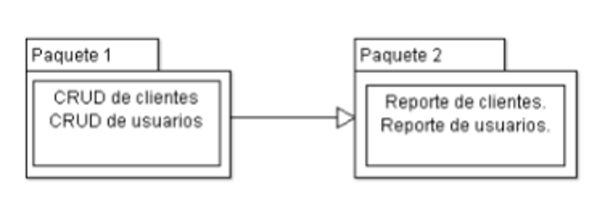Los paquetes pueden ser simples estructuras conceptuales o pueden estar reflejados en la implementación.
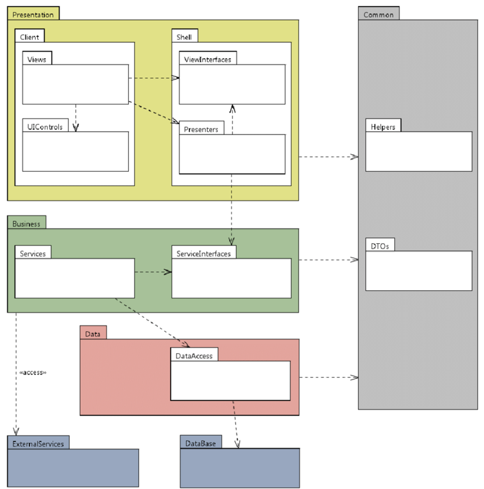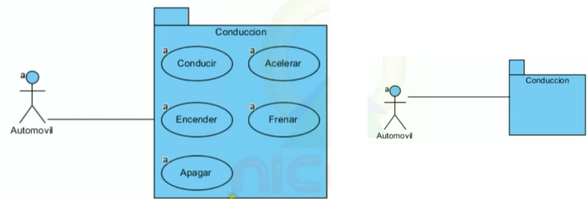 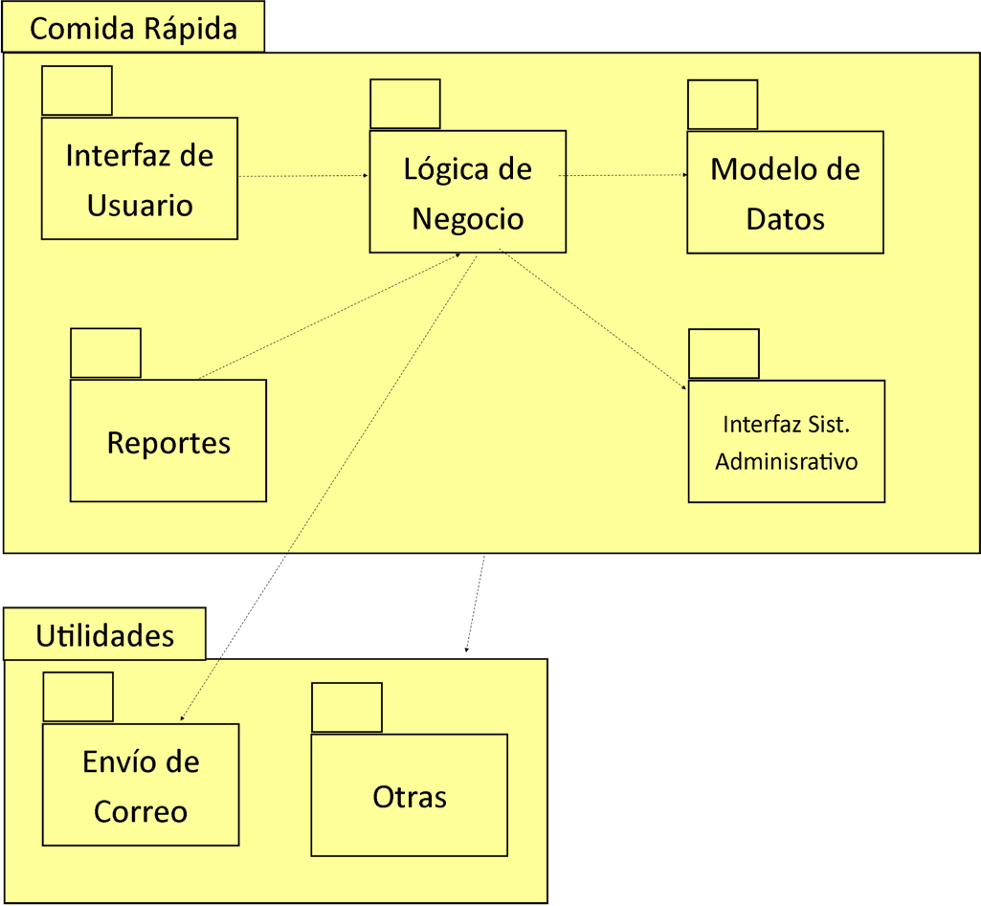 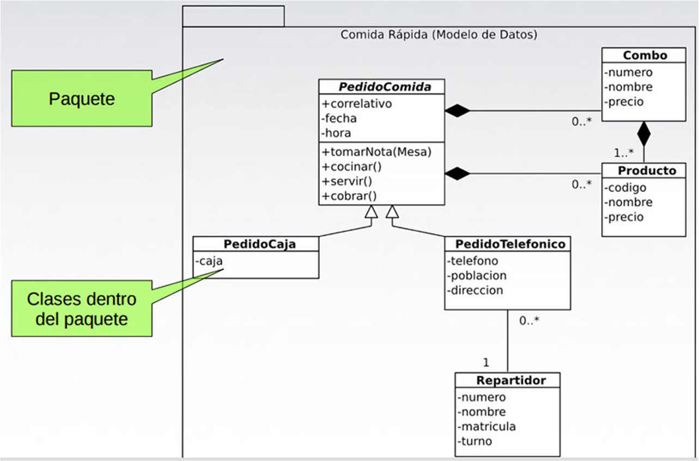 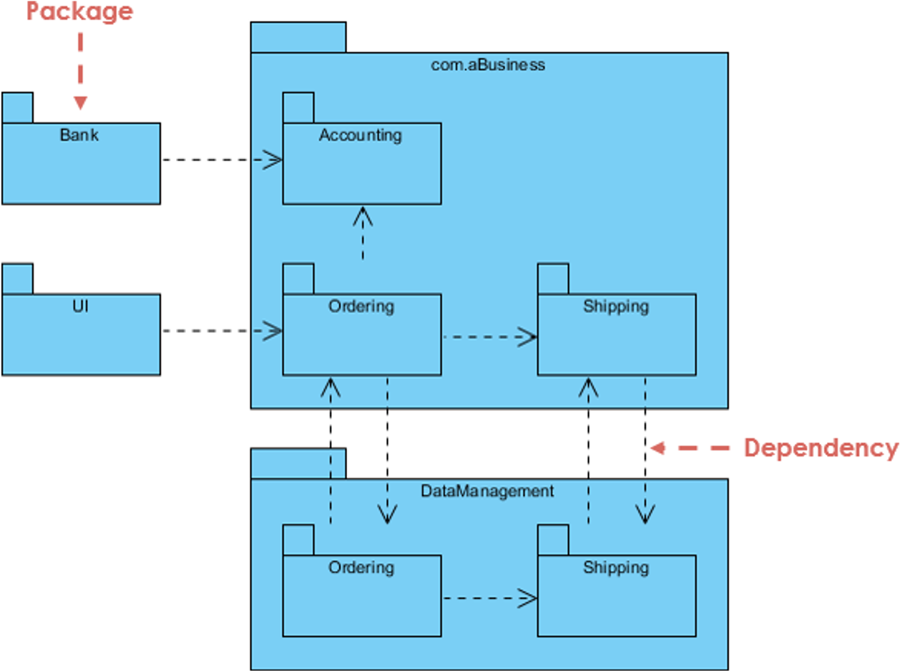 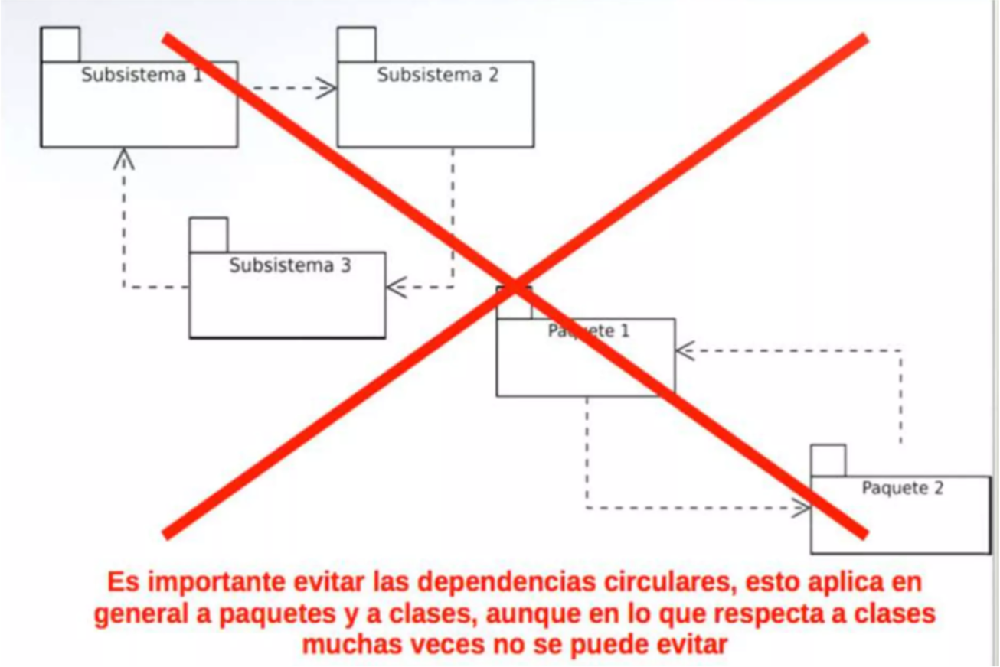
Warning
Ejemplo1: Class1 y class2 = import class1 de class2, import class2 de class1
Ejemplo2: Bases de datos= tablas de muchos a muchos, generar una tabla de muchos a 1.
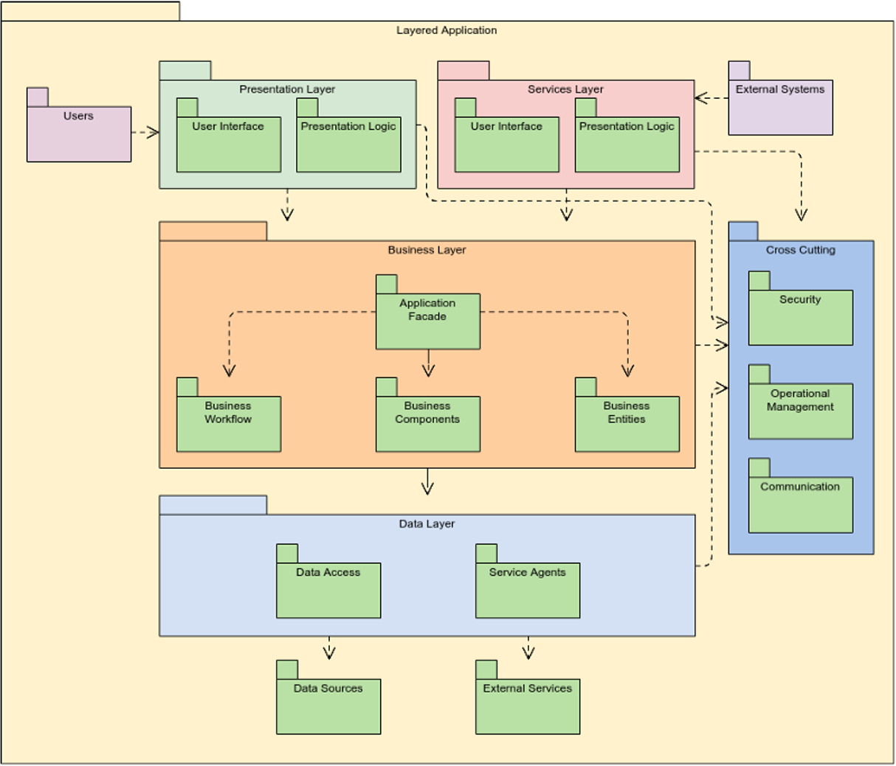 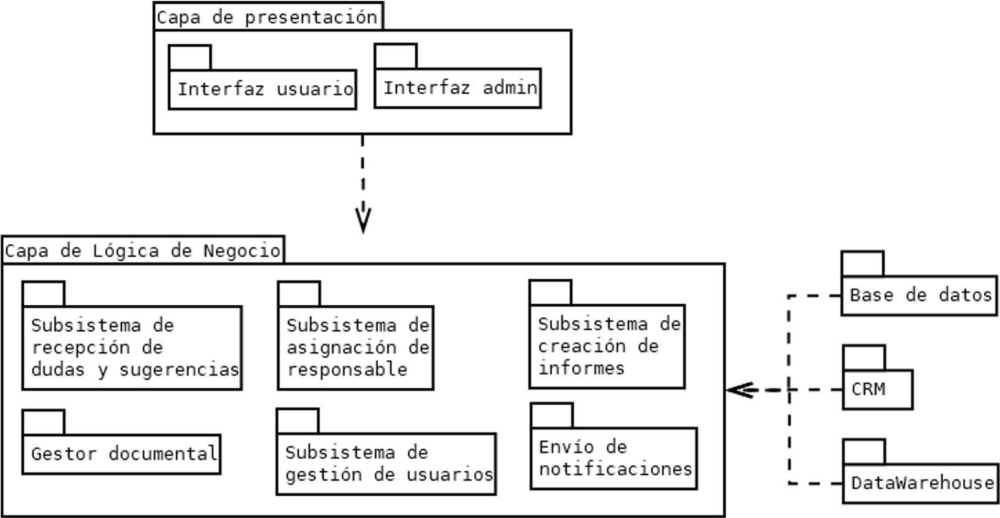 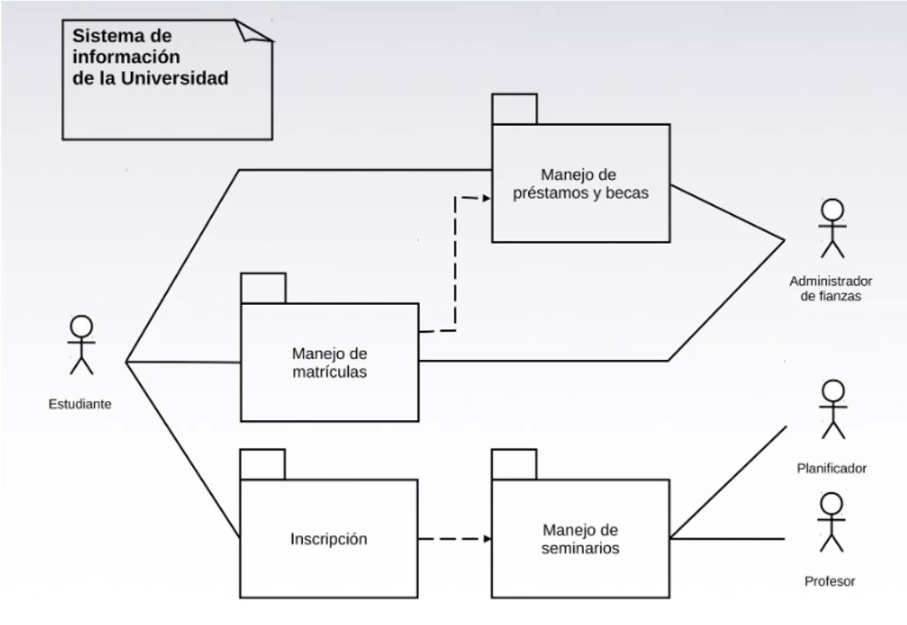
Actividad#
Realice un diagrama de paquetes a partir de la siguiente información:
Una empresa de desarrollo de videojuegos ha decidido reorganizar su plataforma de gestión de proyectos para facilitar la comunicación y colaboración entre los distintos equipos. La plataforma se compone de varios módulos interconectados, que incluyen:
Un módulo de planificación de proyectos que permite a los gerentes de proyecto asignar tareas a los miembros del equipo y establecer fechas límite.
Un módulo de seguimiento de tiempo que permite a los empleados registrar las horas trabajadas en cada tarea.
Un módulo de control de versiones para almacenar y administrar el código fuente de los videojuegos.
Un módulo de gestión de recursos, como modelos 3D, texturas, sonidos y música, que facilita la organización y el acceso a estos activos.
Un módulo de comunicación interna que incluye un sistema de mensajería y foros de discusión para fomentar la colaboración entre los equipos.
Solución
La empresa ha identificado a los siguientes actores principales en el sistema:
Gerentes de proyecto: planifican y supervisan los proyectos, asignan tareas y establecen fechas límite.
Desarrolladores: trabajan en el código fuente de los videojuegos y registran su tiempo de trabajo.
Diseñadores gráficos y de sonido: crean y gestionan los recursos visuales y sonoros de los videojuegos.
Personal de soporte técnico: proporciona asistencia y soluciones a problemas en la plataforma.
Administradores del sistema: se encargan de la configuración, mantenimiento y actualizaciones de la plataforma.
Su tarea es crear un diagrama de paquetes UML para representar la organización lógica y modular de esta plataforma de gestión de proyectos. Considere los módulos descritos, las relaciones entre ellos y los actores involucrados.
Solución
Identifiquemos los principales paquetes y los actores involucrados:
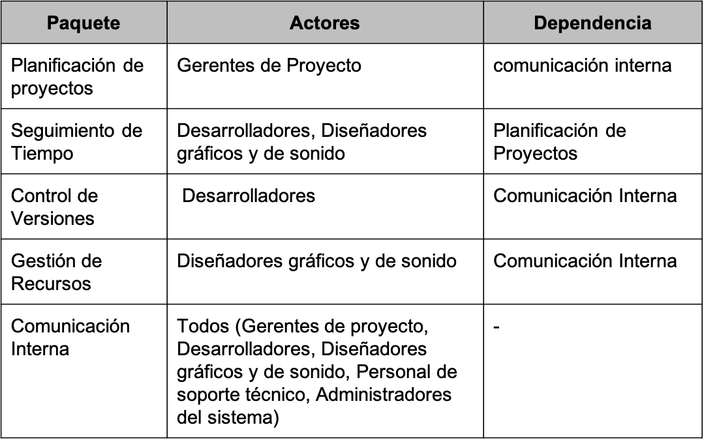
Solución: Paquetes
Ahora vamos a crear el paquete general y a colocar los actores:

Solución: Paquetes
Luego, diseñamos los paquetes y los subpaquetes que se establecen en la tabla y les damos las relaciones con sus dependencias

Solución: Paquetes
Finalmente, realizamos la asociación de los actores con los respectivos paquetes
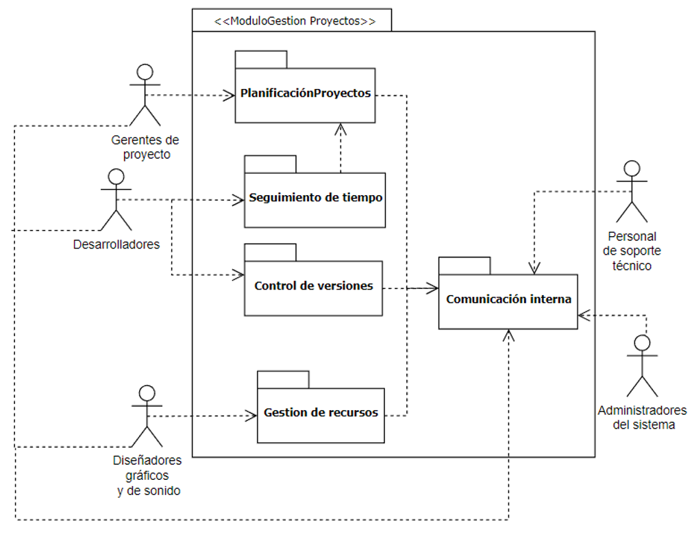Diagramas de Despliegue#
Es el diagrama que muestra la configuración de los nodos que participan en la ejecución y de los componentes que residen en ellos.
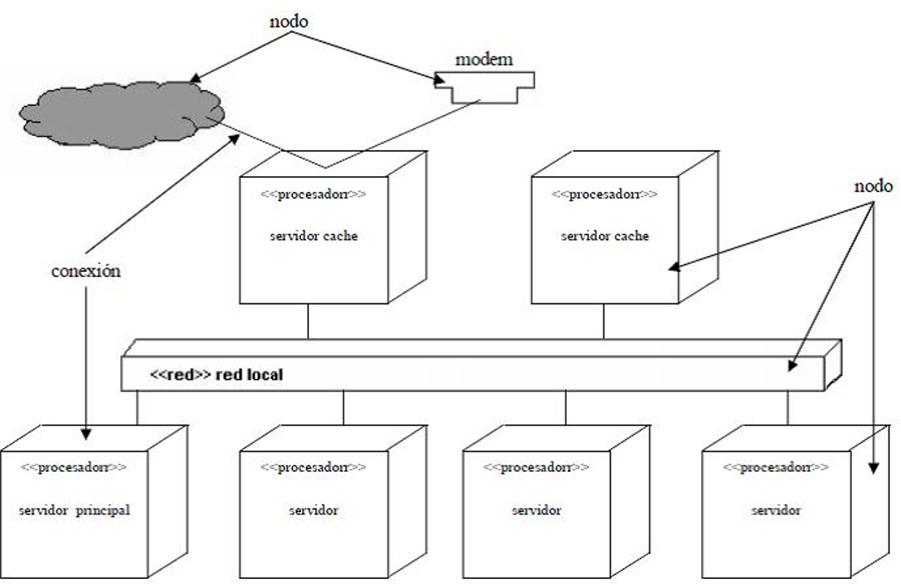Se utiliza para modelar la vista de despliegue estática de un sistema. Esto implica modelar el hardware sobre el que ejecuta el sistema.
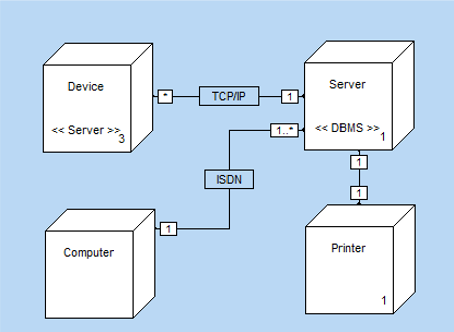Muestra las relaciones físicas entre los componentes de hardware y software en el sistema final.
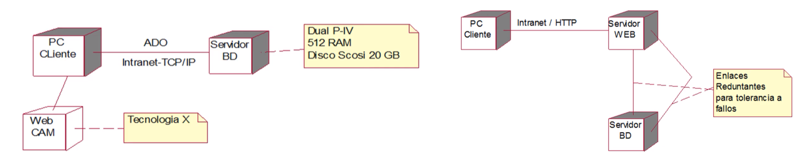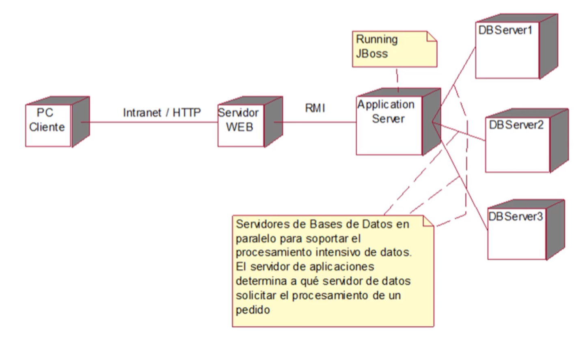
En este se ve que la base de datos está en espejo para el procesamiento y solicitud masiva de información
Utilidad de los diagramas de despliegue#
Se utilizan los diagramas de despliegue para modelar:
Sistemas Empotrados (embebidos)
Sistemas cliente-servidor
Sistemas completamente distribuidos.